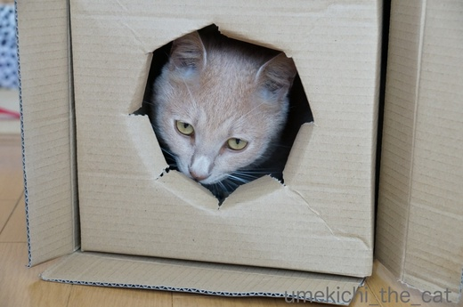
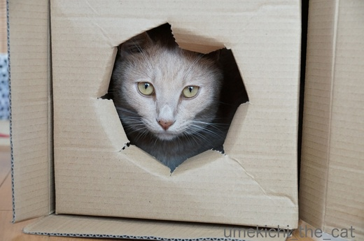
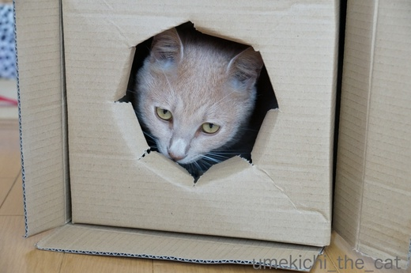
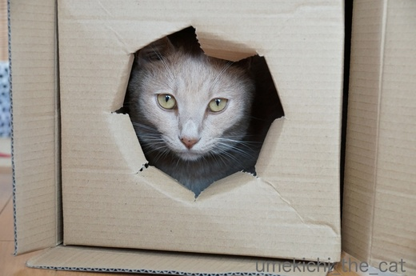

箱、要注意 [梅吉]
手頃な箱が届いたので早速入ってみる。

味わってみる。


怖い顔してますが満足気です。真剣すぎるのかも〜(*>艸<)
穴から出ようとすると、あららららー、おにゃかに引っかかっちゃいましたよ。


困惑顔ww
![[猫]](https://blog.ss-blog.jp/_images_e/101.gif) わし いっしょうこのすがたなんやろか・・・・・
わし いっしょうこのすがたなんやろか・・・・・

なんとか自力で脱出〜！
我が家もそろそろnewおもちゃを投入しようかしらね、と思っていた矢先の箱。
当分これで遊べそうです(๑˃̵ᴗ˂̵)و
 ↑ガブッと一押し↑
↑ガブッと一押し↑
決して箱だけが届いたわけではありません＾＾
中はこれ。おっと、ありがとう！！
大変私ごとですが今日誕生日なんです（わぁ〜照れる〜〜）。
齢の方は皆様の想像にお任せしますね！
梅吉さんにはもう一つ嬉しいものがありますよ〜。
ひもやな。
ほうほう これは なかなかのひもやで。
ひもはむっちゃええんやけどな はこがようちゅういや。

味わってみる。


怖い顔してますが満足気です。真剣すぎるのかも〜(*>艸<)
穴から出ようとすると、あららららー、おにゃかに引っかかっちゃいましたよ。


困惑顔ww

なんとか自力で脱出〜！
我が家もそろそろnewおもちゃを投入しようかしらね、と思っていた矢先の箱。
当分これで遊べそうです(๑˃̵ᴗ˂̵)و
決して箱だけが届いたわけではありません＾＾
中はこれ。おっと、ありがとう！！
大変私ごとですが今日誕生日なんです（わぁ〜照れる〜〜）。
齢の方は皆様の想像にお任せしますね！
梅吉さんにはもう一つ嬉しいものがありますよ〜。
2017-08-21 15:11
nice!(56)
コメント(26)

カフェオレ色の梅吉

梅吉 2023年8月10日 永眠


梅吉と出会った譲渡会

犬猫の理由なき殺処分ゼロ
妄想広告
UMEKICHI 光

爆発的に早い！
時々攻撃的！
Thanks to Mr.Boss365
爆発的に早い！
時々攻撃的！
Thanks to Mr.Boss365

あらまっ、梅吉さん！！
なんて、ハイカラなお召し物！
段ボール・スカートじゃございませんか？？
堅さのなかにも、ふんわり感ほどよく、ウエストがキュッと見えます。
段ボールの「ちぎっては投げ！」も、さまになってるわ～(^^♪
ちぃさん、お誕生日おめでとうございます♪
お花はピンクでコーディネイト♡、可愛いです～。
by morichan (2017-08-21 15:34)
ちぃさん、お誕生日おめでとうございます!(^^)!
お母さんは綺麗な花に癒やされ、梅吉さんは箱で遊び（遊ばれ？ｗ）
お父さん、NICEです(^-^)
お腹にひっかかったとはいえ、この穴から出られる梅吉さんってばスレンダー(^_^)v
うちの大御所だともっと顔に近い場所でひっかかるなｗ
高価なおもちゃよりも箱やリボンの方がお猫様が喜ぶのはなぜなんでしょうねぇ^^;
by ニッキー (2017-08-21 16:16)
誕生日おめでとうございます。いつも優しい旦那さんですねうちは花送ってもらった事なんてないですよ～(*^_^*)
梅吉君新しいおもちゃができてよかったね！
by palpal (2017-08-21 16:18)
お誕生日、おめでとうございます！！
(*＾◇^)/ﾟ・:*【祝】*:・ﾟ＼(^◇^*)
こんなチャーミングなおのこに恵まれて、この一年もますますハッピーに♪
ちぃさんの深くて大きな愛が、その存在から地球中に広がりますように！
by Ginger (2017-08-21 16:31)
お誕生日〜！！！
おめでとうございます╰(*´︶`*)╯♡
私、最近の誕生日は迎えるたびに1引く日だと思うようにしてます(^^;
これからの一年も良いことたくさんありますように^ ^
by も〜 (2017-08-21 16:35)
お誕生日おめでとうございます＼(^o^)／
花を送ってくださるなんてステキな旦那さま、ウチなんて無い、無い(^▽^;)
梅吉さん、おかーさんの罠にかかったらアカンよ～。
そのままヒモめがけて飛び込んだら、また化粧まわしが付いてくるよ～^^
by ゆきち (2017-08-21 16:40)
morichanさん＞ダンボールスカートはフープで形作った様なフォルムが
ちょっと近未来チックな感じですよね〜ww
ワタクシ、リオオリンピックの閉会式の東京セレモニーを思い出しました(*>艸<)
（え？シカクしか同じじゃない？）
ちぎっては投げ！は得意技なんですよー。ニンゲンにも仕掛けて来ます (^▽^;)
誕生日のお祝いのお言葉ありがとうございます！
また１つ立派な大人になれましたww
ニッキーさん＞おっとか何か選んでくれる時、梅吉も一緒に喜べるものを・・
と考えてくれているのかもしれませんね！（褒めておかなくっちゃ！！）
おにゃかに引っ掛かってしまったのは「けのせいだにゃ！」との
梅吉談でございましたよww
お祝いのお言葉ありがとうございましたm(_ _)m
palpalさん＞宅配で何か届くたび「それはなんや〜〜〜！」と
走ってくる梅吉なのでなんでもおもちゃにはなるんですよね^^;
お花にも興味津々で早速鼻先を突っ込んでましたwww
留守番する時や夜寝るときはお花は冷蔵庫の中ですよー (⌒_⌒;
お祝いのお言葉ありがとうございます！
Gingerさん＞お祝いのお言葉ありがとうございます！
また１つ大人への階段を上がりましたわ( ^ω^ ）
じつは2年前の誕生日のプレゼントは梅吉なんですよ〜。
プレゼントが大きく健康にそしてチャーミングに育ってくれて
私も感無量です(꒦ິ⌑꒦ີ)
も〜さん＞おお！ポジティブな誕生日の捉え方ですね！！
我が家では一の位で年を表現するので永遠の１〜９歳なんですよ(*>艸<)
お祝いのお言葉ありがとうございましたm(_ _)m
ゆきちさん＞お祝いのお言葉ありがとうございます！
ふふふ、美味しいスィーツのお土産も素敵ですよー(^_－)☆
化粧回し！！(*>艸<)
梅吉は大阪の子らしく付き合いが良いので再度ダンボールにダイブして
ミスドのポンデライオン見たくなってましたよ( ^ω^ ）
by ちぃ (2017-08-21 18:09)
お誕生日お目出度うございます(^^)
梅吉さん箱と格闘になっちゃいますね！
by ma2ma2 (2017-08-21 18:12)
お誕生日おめでとうございます！お花のプレゼントですか？良いですね～そしてジャストサイズの箱で良かったね！
by みぃにゃん (2017-08-21 18:34)
お誕生日おめでとうございます。
私もお花もらった事ないです~。ホントに素敵な旦那様! 2年前のブレゼントが梅吉さんだなんてもう最高ですね。仲の良いご夫婦と一人息子ニャンのますますの幸せをお祈りします。(うらやましー)
by zombiekong (2017-08-21 20:00)
お誕生日おめでとぉ～ございます(*^_^*)
お花のプレゼント！素敵な旦那様ですね♪
また一年楽しく過ごせますように！！
梅吉さんも段ボールで遊べるし
ヒモでも楽しめるし♪
梅吉さんの楽しい姿が
何よりも嬉しい誕生日プレゼントかもしれませんね！！
by きぃ (2017-08-21 20:15)
お誕生日おめでとうございます♪
梅吉さん、箱をまとってお祝いのダンス？
by yamachan (2017-08-21 20:43)
お誕生日、おめでとうございます(^^♪
ちぃさんは薔薇のような人だと今まで勝手に想像していました。
やはり、そうなんですね(^^♪
箱は猫にとってオモチャ以外の何物でもないんですね。
by riverwalk (2017-08-21 21:43)
お誕生日、おめでとうございます！
お誕生日プレゼントのお花が
梅吉さんに変わってしまったのですね（？）。^^;
梅吉さん、ひもの前の箱に葛藤してますね～。
by yes_hama (2017-08-21 21:46)
梅吉さんのおかーさん・ちぃさんお誕生日おめでとうございます。
歳は想像でということなので（・・・妄想中ww）とこれくらいにしておこうかな。
といっても年齢には関心がないのであります。
ちぃさんを見ています。
by kiki (2017-08-21 22:40)
お誕生日おめでとうございます！
素敵なお花ですね＾＾
梅吉さん、楽しんでますね♪
by マーヤ (2017-08-22 01:05)
こういう穴付きの箱は
ニャンコが見逃す訳ないですね＾＾
by ぽちの輔 (2017-08-22 07:07)
あははは(笑)
おなかにひっかかってる姿可愛すぎるー！
ちぃさんお誕生日おめでとうございます！
たぶん同じくらいの年齢だろうなーって勝手に想像してます(笑)
これからも家族みんなで元気にお過ごしください^^
お悔やみコメントありがとうでした！
by リュカ (2017-08-22 10:02)
ちぃさん、お誕生日おめでとうございます♪
旦那様、こっそりお花を選んで贈ってくれたのでしょうか。
優しい～っ( ；∀；)
いつもほんわか。幸せハッピーなちぃさま家。
これからの1年も仲良くお過ごしくださいませ♪
お花の箱もリボンも梅吉くんの恰好のおもちゃになっちゃったね。
でも箱は要注意や。だね(^-^)
by emi (2017-08-22 16:06)
お誕生日おめれとうございます。
相変わらず仲が良くて裏山！！
梅吉さんは全身で箱を堪能なさっているご様子だし、末永く幸あれ！
by じゅらまろ (2017-08-22 16:36)
お誕生日おめでとうございます。ヽ(^。^)ノ。。
by 水郷楽人 (2017-08-22 20:14)
お誕生日おめでとうございます！
こんなきれいなお花を贈ってくださるなんて、素敵な旦那さま☆
梅吉さんも堪能しましたね～♪
箱入ってみての～満足顔、おにゃかにひっかかっての～困惑顔、そして紐でまた張り切っちゃう＾＾
by sana (2017-08-22 23:32)
おめでとうございます^^
綺麗なお花ですね。
ご主人からお花なんて素敵です。
by ryang (2017-08-23 00:15)
ハッピーバースデー！ちぃさん！(*´︶`*)❤
素敵なお花ですね！しかも梅吉君にも素敵なプレゼント付き(箱と紐)。梅吉君、スカートみたいだね！
味わってみる、がいいですね。いい歯してる〜♬
好きな味、とか、キライな味、の段ボールとかあったら面白いですね。魚風味とか(臭そう…
by BillK-ko (2017-08-23 11:39)
ma2ma2さん＞梅吉は箱と格闘の末がぶがぶかじって破壊し始めましたーww
お祝いのお言葉ありがとうございましたm(_ _)m
みぃにゃんさん＞単なる箱じゃなく丸い穴つきがウケてました！
お祝いのお言葉ありがとうございました！
zombiekongさん＞プレゼントくん毎日元気に大活躍ですよ〜＾＾
手応え十分すぎるプレゼント( ^ω^ ）最高で〜す。
お祝いのお言葉ありがとうございましたm(_ _)m
きぃさん＞梅吉の元気な姿は毎日の嬉しいプレゼントですね〜＾＾
おにゃかに引っ掛かっていた段ボール、本当にお気に入りな様です♪
体に装着してもよし、フタにしてよし齧ってよし(^▽^;)
お祝いのお言葉ありがとうございます！
yamachanさん＞おお！梅吉からのプレゼントだったのですね。
身を呈してくれて・・・ええ子や(꒦ິ⌑꒦ີ)
お祝いのお言葉ありがとうございますm(_ _)m
riverwalkさん＞まぁあああ〜！薔薇だなんてぇ〜(*>艸<)
素敵なお言葉ありがとうございます！！
自分で言うのもなんですが、トゲがあることろがそっくりですよ〜(๑˃̵ᴗ˂̵)و
梅吉はお花にも興味を持っていましたが
やっぱり最後は箱にイン！でした＾＾
yes_hamaさん＞箱から飛び出て来たのは梅吉でした！なんてね(*>艸<)
ひもの前に葛藤する梅吉、でもすぐ釣れちゃうんですよww
お祝いのお言葉ありがとうございましたm(_ _)m
kikiさん＞年齢なんてものを軽く飛び越えてしまうのが
ネットの不思議なところですよね＾＾
お祝いのお言葉ありがとうございましたm(_ _)m
リッパなオトナになれる様にこれからも精進いたします(｀_´)ゞ
マーヤさん＞梅吉も私も嬉しいプレゼントでした( ^ω^ ）
梅吉の方が長く楽しめそうなのが羨ましい・・・・
お祝いのお言葉ありがとうございましたm(_ _)m
ぽちの輔さん＞本体部分の箱には横穴がついてるんですよー。
この穴でも楽しい遊びが出来そうです♪
リュカさん＞うん( ^ω^ ）多分同じお年頃。
誤差はあっても５歳前後？くらいでしょうか。
お腹に引っかかって困った顔するくせに何度も頭を突っ込むんですよ〜。
きっと困った状況を楽しんでるのね＾＾
お祝いのお言葉どうもありがとう！！
お母様、東京に遊びに来る機会が増えるかしらね。
どんどん楽しんでいただきたいわ！
emiさん＞今年は赤にしてみた！と送ってくれた本人も嬉しそうでした＾＾
もちろん私も大喜びで〜す。お花って嬉しいですよね＾＾
ダンボールは警戒している風に見せて何度も頭を突っ込んで
お腹にはめて困った顔してますww
そういう遊びが好きなのよね、梅吉(*>艸<)
お祝いのお言葉ありがとうございましたm(_ _)m
じゅらまろさん＞私より梅吉の方が喜んじゃってるかもー(*>艸<)
通り抜けられそうで出来ないあの「穴」がツボってるみたいですよww
お祝いのお言葉どうもありがとうございました！
水郷楽人さん＞お祝いのお言葉どうもありがとうございましたm(_ _)m
もうりっぱなおばちゃんなので年をとるのも良いものだな＾＾と
思っております。
sanaさん＞梅吉は満足〜困惑〜張り切り〜のループに
（ダンボール）破壊〜を付け加えて楽しんでおります(*>艸<)
箱の形が変わっちゃうのも時間の問題かな・・・・・
お祝いのお言葉ありがとうございますm(_ _)m
ryangさん＞梅吉が我が家に来てから私がすっかり花を買わなくなったので
（いたずらしてかじったり倒したりするんですよ〜^^;）
気を使ってくれているのかもしれません。
私が一番喜ぶプレゼントなのも確かだし＾＾
お祝いのお言葉ありがとうございましたm(_ _)m
BillK-koさん＞ダンボールスカート、エコだし今後流行るかもしれませんよ(*>艸<)
となると、梅吉、トレンドの発信源！！
立ち止まって履いているスカートを「味わう」まで流行ったらすごいなぁ・・・
魚風味・・・・・電車で隣の人が履いてたらちょっと嫌かも〜。
でも、ダンボールって匂い移りがしそうだから焼き肉食べに行ったら焼肉風味
ケンタに行ったらケンタ風味に早変わりしそうよーww
by ちぃ (2017-08-23 15:51)
遅くなりましたが、
お誕生日おめでとうございます。
梅吉君が楽しむことが出来るのも、
計算の上のプレゼントなのでしょうね。
ナイス旦那さん！
by うめむす (2017-08-23 18:35)